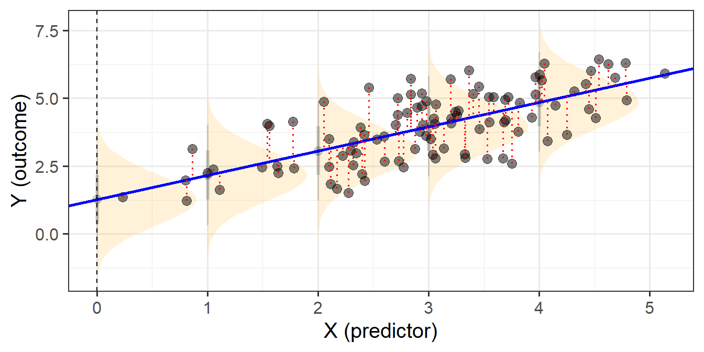
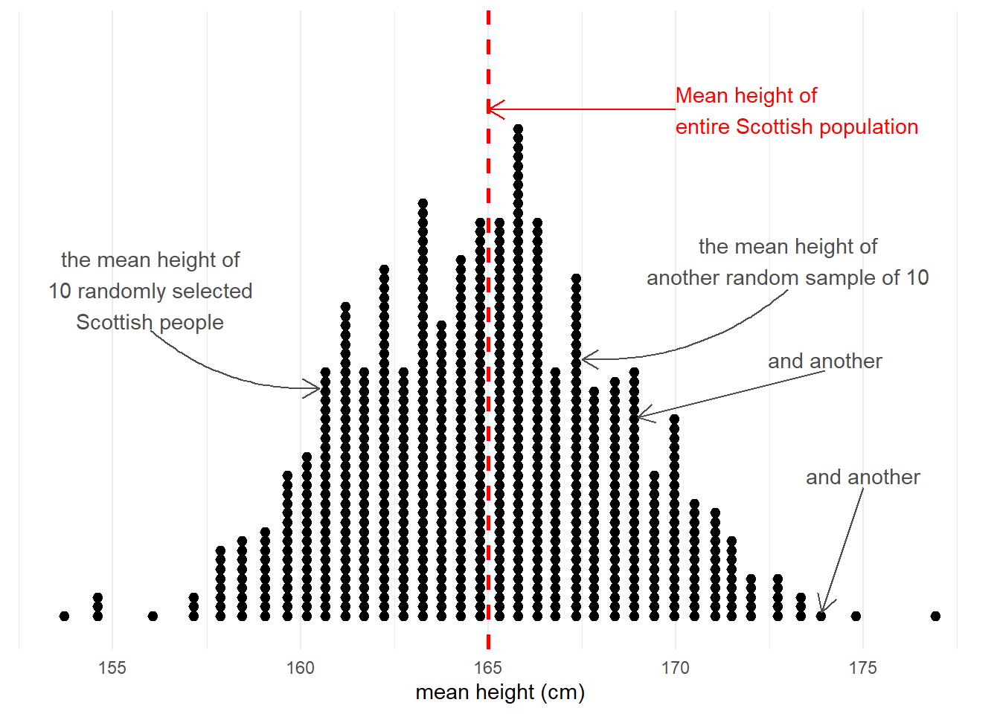
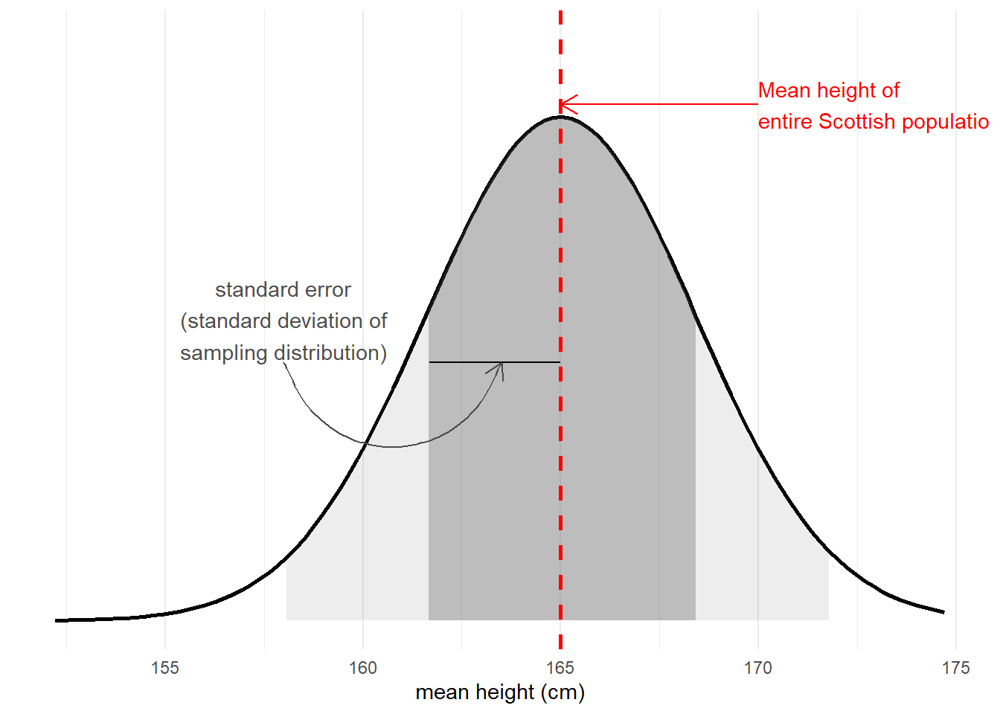
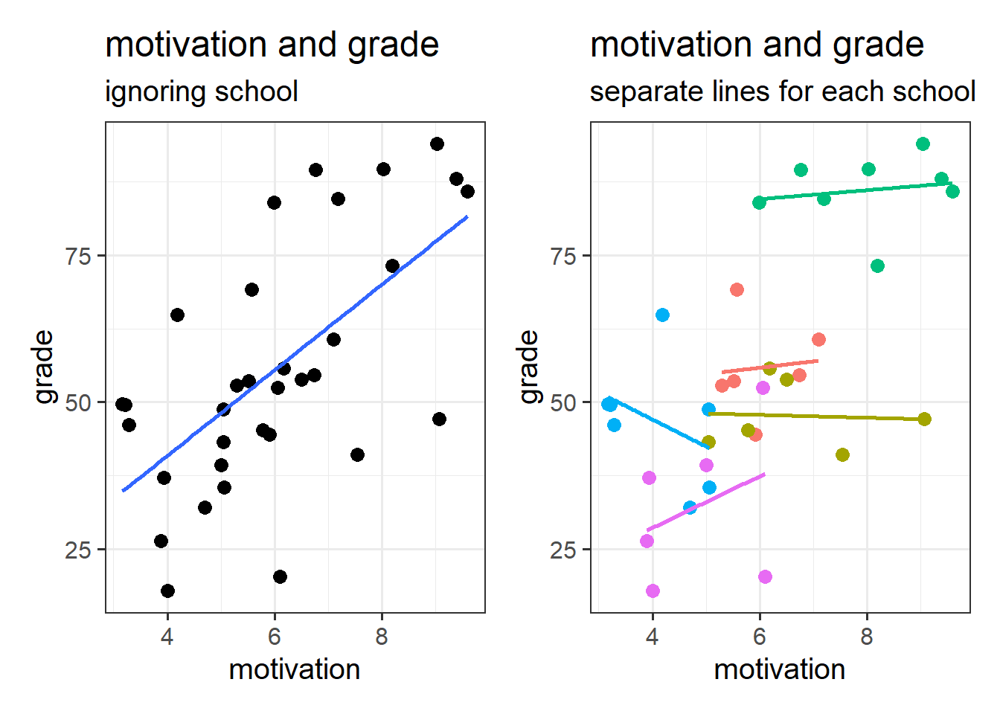
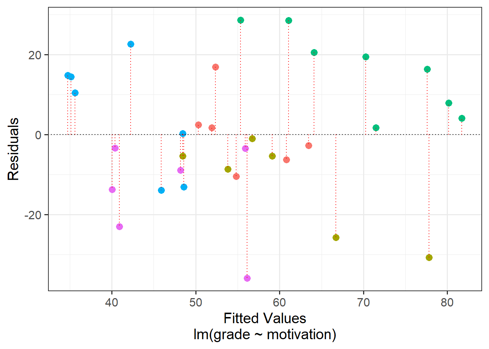
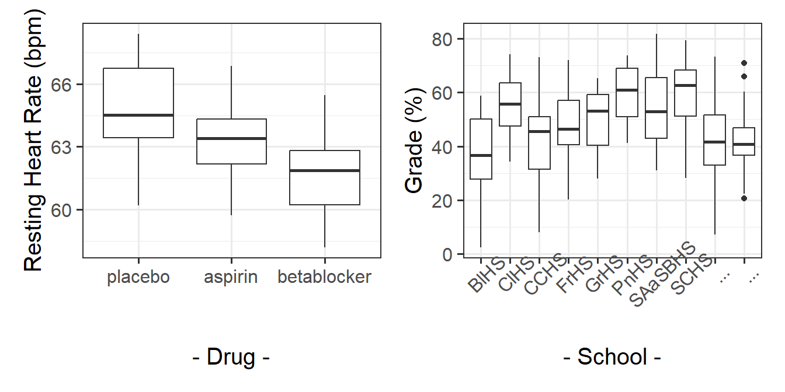
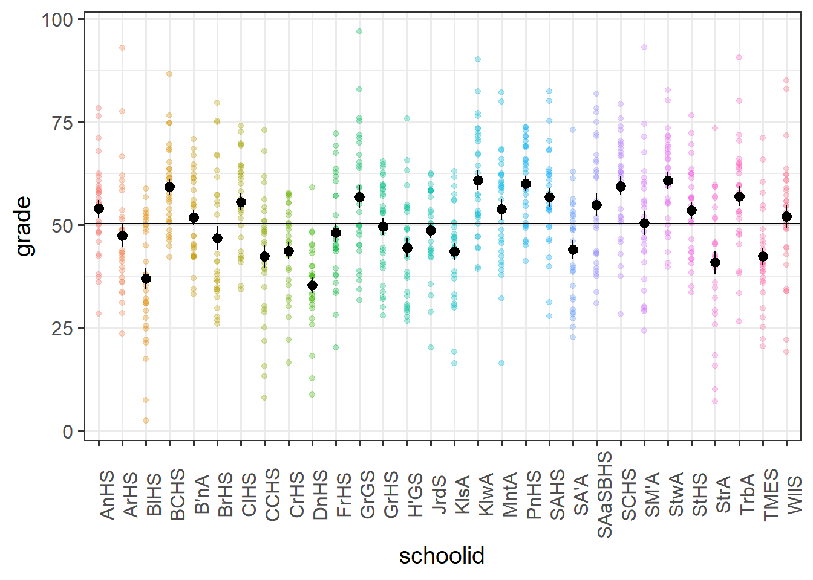
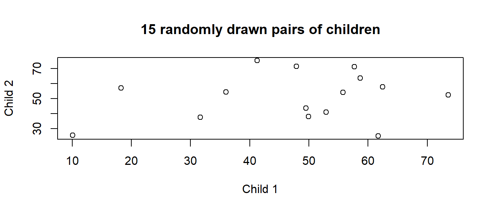
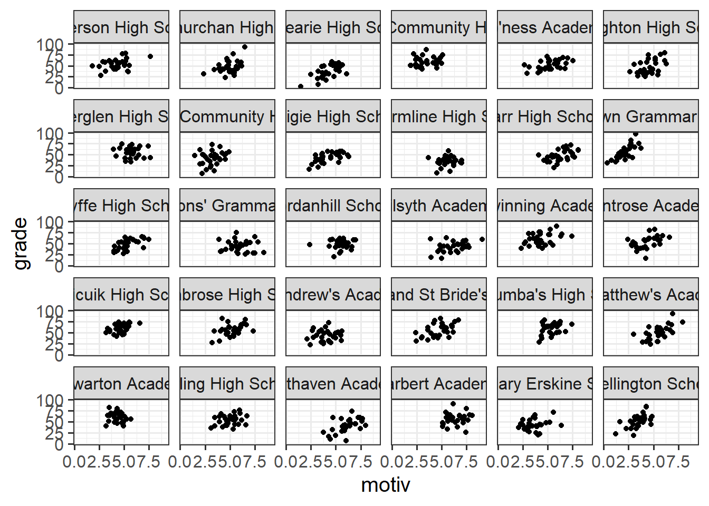
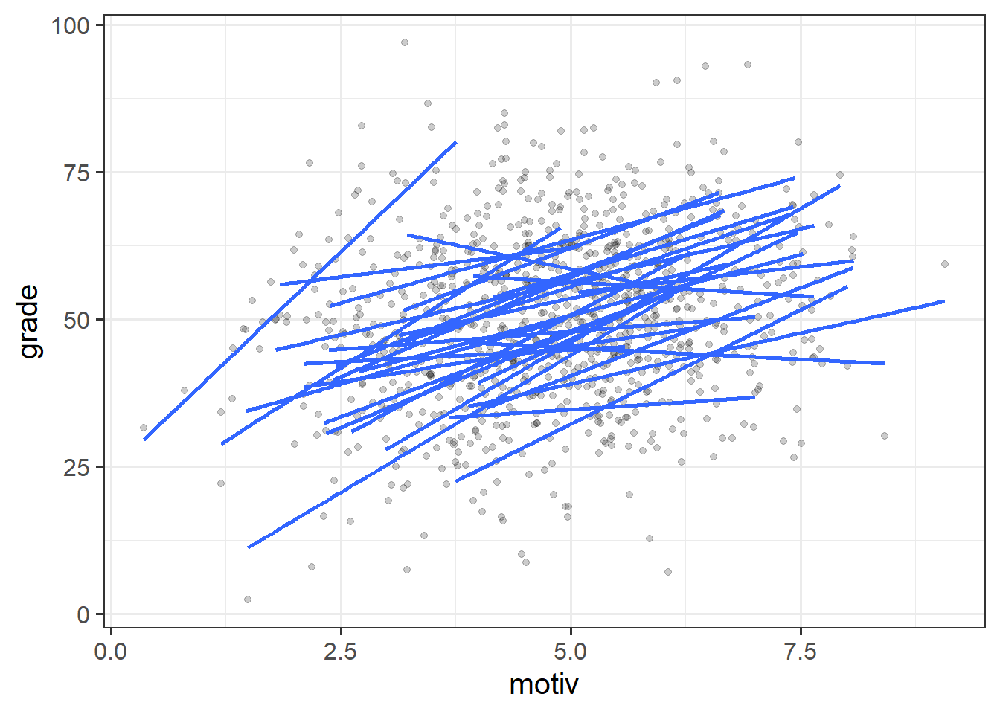

lm(y ~ x1 + x2 + .... xp, data = mydata) 1. Clustered Data
This reading:
- A refresher on the linear regression model
- An introduction to clustered data
- Working with clustered data (sample sizes, ICC, visualisations)
Our Starting Point
We’re going to start this course with our good old friend the linear regression model. The content we’re going to cover in this block can be seen as an extension of these methods, so keep in mind that the materials from previous courses you have taken will likely be very a useful resource.
Linear Regression
The linear regression model is a way of expressing an outcome (or “dependent”) variable \(y\) as the linear combination of various predictors \(x_1,\ ...\ ,\ x_p\) (or “independent variables”).
We can write the linear regression model as:
\[
\begin{align}\\
& \color{red}{y} = \color{blue}{b_0 + b_1x_1 \ + \ ... \ + \ b_px_p} \color{black}{\ + \ \varepsilon}\\
& \text{Where:} \\
& \epsilon \sim N(0, \sigma) \text{ independently}
\end{align}
\] where the \(b\)’s (sometimes written \(\beta\)) are the partial associations between each predictor and the outcome. For instance, \(b_1\) represents the expected change in \(y\) associated with a 1 unit change in \(x_1\), while holding constant other independent variables \(x_2,\ ...\ ,\ x_p\).
In this way, we can use the regression model to isolate the association between each predictor and the outcome from the other predictors in the model.
In R, we fit these models using:
optional: a general notation
If we wanted to write this more simply, we can express \(x_1\) to \(x_p\) as an \(n \times p\) matrix (sample size \(\times\) parameters), and \(b_0\) to \(b_p\) as a vector of coefficients: \[ \begin{align} & \color{red}{\mathbf{y}} = \color{blue}{\mathbf{X b}} + \boldsymbol{\varepsilon} \\ & \varepsilon \sim N(0, \sigma) \text{ independently} \\ \end{align} \] You can see below how we get between these two formulations. In the top line, we use an index \(i\) to indicate that the model is fitted over a set of observations. In the middle we can see this expanded out to show the value for each individual observation on each \(y\) and \(x\). Because the \(b\) coefficients are fixed - they are the same for each observation \(i\), we can separate them out so that we are multiplying the \(\mathbf{X}\) matrix by the vector of \(\mathbf{b}\)’s (i.e. the formulation we see at the bottom).
\[ \begin{align} \color{red}{y_i} \;\;\;\; & = \;\;\;\;\; \color{blue}{b_0 \cdot{} 1 + b_1 \cdot{} x_{1i} + ... + b_p \cdot x_{pi}} & + & \;\;\;\varepsilon_i \\ \qquad \\ \color{red}{\begin{bmatrix}y_1 \\ y_2 \\ y_3 \\ y_4 \\ y_5 \\ \vdots \\ y_n \end{bmatrix}} & = \color{blue}{\begin{bmatrix} 1 & x_{11} & x_{21} & \dots & x_{p1} \\ 1 & x_{12} & x_{22} & & x_{p2} \\ 1 & x_{13} & x_{23} & & x_{p3} \\ 1 & x_{14} & x_{24} & & x_{p4} \\ 1 & x_{15} & x_{25} & & x_{p5} \\ \vdots & \vdots & \vdots & \ddots & \vdots \\ 1 & x_{1n} & x_{2n} & \dots & x_{pn} \end{bmatrix} \begin{bmatrix} b_0 \\ b_1 \\ b_2 \\ \vdots \\ b_p \end{bmatrix}} & + & \begin{bmatrix} \varepsilon_1 \\ \varepsilon_2 \\ \varepsilon_3 \\ \varepsilon_4 \\ \varepsilon_5 \\ \vdots \\ \varepsilon_n \end{bmatrix} \\ \qquad \\ \color{red}{\boldsymbol y} \;\;\;\;\; & = \qquad \qquad \;\;\; \mathbf{\color{blue}{X \qquad \qquad \qquad \;\;\;\: b}} & + & \;\;\; \boldsymbol \varepsilon \\ \end{align} \]
When we fit linear regression models, we are fitting a line (or a regression surface, when we add in more predictors), to a cloud of datapoints. The discrepancy between the fitted model and the observed data is taken up by the residuals.
\[ \begin{align} \color{red}{y} &= \color{blue}{b_0 + b_1x_1 \ + \ ... \ + \ b_px_p} \color{black}{+ \varepsilon}\\ \color{red}{\text{observed }y} &= \color{blue}{\text{fitted }\hat y} \,\, \color{black}{+ \text{ residual }\hat \varepsilon}\\ \end{align} \]
We are theorising that our model contains all the systematic relationships with our outcome variable, we assume that the residuals - the leftovers - are essentially random noise. This is the \(\epsilon \sim N(0, \sigma)\) bit, which is a way of specifying our assumption that the errors are normally distributed with a mean of zero (see Figure 1).

We typically want to check our model residuals (by plotting or performing statistical tests) to determine if we have reason to believe our assumptions are violated. The easiest way to do this in R is with plot(model), which provides us with a series of visuals to examine for unusual patterns and conspicuous observations.
When model assumptions appear problematic, then our inferential tools go out the window. While our specific point estimates for our regression coefficients are our best linear estimates for the sample that we have, our standard errors rely on the distributional assumptions of the residuals1. It is our standard errors that allow us to construct test statistics and compute p-values (Figure 2) and construct confidence intervals. Our assumptions underpin our ability to generalise from our specific sample to make statements about the broader population.

Refresher: Standard Error
Taking samples from a population involves an element of randomness. The mean height of 10 randomly chosen Scottish people will not be exactly equal to the mean height of the entire Scottish population. Take another sample of 10, and we get another mean height (Figure 3).

The standard error of a statistic is the standard deviation of all the statistics we might have computed from samples of that size (Figure 4). We can calculate a standard error using formulae (e.g. for a mean, the standard error is \(\frac{\sigma}{\sqrt{n}}\)) but we can also use more computationally intensive approaches such as “bootstrapping” to actually generate an empirical sampling distribution of statistics which we can then summarise.
We use the standard error to quantify the uncertainty around our sample statistic as an estimate of the population parameter, or to construct standardised test statistics in order to perform tests against some null hypothesis.

In the face of plots (or tests) that appear to show violations of the distributional assumptions (i.e. our residuals appear non-normal, or variance changes across the range of the fitted model), we should always take care to ensure our model is correctly specified (interactions or other non-linear effects, if present in the data but omitted from our model, can result in assumption violations). Following this, if we continue to have problems satisfying our assumptions, there are various options that give us more flexibility when we are faced with non-normality or non-constant variance of our residuals. If you’re interested, you can read brief explanations about some of these methods here.
However, there is one assumption that we are unable to identify through examining diagnostic plots for patterns, and that is our assumption of “independence”. Thinking broadly, if our observations are not independent from one another, this means that there are systematic differences in our outcome variable that our model is not capturing. This is not something that is easily ‘corrected’2 - it is something that we want to incorporate into our model structure.
Independence of observations
Individual observations in the sample are not dependent upon one another in any way. The value of one observation is not systematically related to the value of any other observation.
One common way in which observations are not independent can come when the data has a hierarchical structure - some form of clustering of observations into different groups. These groups, or ‘clusters’, could be simply something we observe, or they could be the result of how we have designed our study.
Clustered Data
A common example to start thinking about clustered data is to think about conducting a study on school children. Each observation in our sample is a different child, and they come from a set of various schools (i.e. we might get 20 children from Dunfermline High School, 15 from Farr High School, and so on). If we ignore the clustering of children into their respective schools, we can end up reaching completely different conclusions.
This can be seen in Figure 5 - in which each datapoint is a single child. If we consider them to be independent of one another (Left-Hand plot), then we might think there is a strong positive relationship between grade and motivation. Once we colour them by which school they belong to, we can see that the observations in the top right of the plots are all high for some other reason - because they come from the green school.

Put another way - the children are not independent from one another, because they tend to be more similar to other children in the same school than they are to children from a different school. Our assumption of the normal linear model that \(\varepsilon \sim N(0,\sigma)\) \(\text{ independently}\) is violated, because groups of residuals are related to one another - e.g. all the children from the green school have positive residuals (see residuals vs fitted plot in Figure 6).

the impact of non-independence on inferences
The reason that violations of our assumption of independence is problematic is that it means we are placing more confidence in our estimates than we should.
This is because all of our inferential tests rely on the estimated variability in our residuals \(y_i - \hat y_i\). This variability is estimated by taking the mean squared error3:
\[ \text{mean squared error} = \frac{\sum{(y_i - \hat y_i)^2}}{n-k-1} \] The denominator bit on the bottom is our degrees of freedom (where \(n\) is the total sample size, \(k\) is how many predictors we have in our model). This is how many independent pieces of information are available for estimating the parameters in our model.
In the scenario where we have, e.g. 33 pupils clustered into 5 schools, how many independent bits of information do we have to begin with? 33? 5? somewhere in between?
If we assume these pupils are all independent, because of how the mean squared error is calculated, our old friend lm() would estimate the residual variability to be smaller than it really is. This means that on average our standard errors will be too narrow, any confidence intervals too narrow, our F statistics will be too large, and our p-values too small.
In essence - our inferences will all be wrong!!
optional: F and t and MSE
The mean squared error (MSE) goes into our \(F\)-statistics as they are the ratio of the mean squares associated with the model and the mean squared error \[ F = \frac{\text{Mean Squares Model}}{\text{Mean Squared Error}} \]
The MSE also goes into our standard errors for our coefficients (and so any subsequent \(t\)-statistics or confidence intervals that we might calculate).
\[
SE(b_p) = \sqrt{ \frac{MSE}{Var(x_p) \cdot (1-R^2_{x_p|x1,...}) }}
\] (Where \(R^2_{x_p|x1,...}\) is the \(R^2\) value of the predictor of interest \(x_p\) regressed onto all other predictors).
Clusters clusters everywhere
The idea of observing “children in schools” is just one such example of clustering that we might come across. This same hierarchical data structure can be found in other settings, such as patients within medical practices, employees within departments, people within towns etc. These sort of groups are higher level observations that we might sample (i.e. I randomly sample 20 schools, and then from each school randomly sample 30 children). However, there are also lots of cases where clustered data might arise as the result of our study design. For instance, in a Repeated Measures study we have individual experimental trials clustered within participants. Longitudinal studies exhibit the same data structure but have time-ordered observations clustered within people.
In addition, we can extend this logic to think about having clusters of clusters, and clusters of cluster of clusters4. Table 1 shows just a few examples of different levels of clustering that may arise from different types of study.
| Cross Sectional | Repeated Measures | Longitudinal | |
|---|---|---|---|
| Level n | ... | ... | ... |
| ... | ... | ... | ... |
| Level 3 | School | ... | Families |
| Level 2 | Classroom | Participants | People |
| Level 1 (Observations) | Children | Experimental Stimuli | Time |
The common thread throughout all these designs is the hierarchy. At the lowest level of our hierarchy is the individual observed thing. For some designs, individual people might be the lowest observation level, for others, people might be the clusters (i.e. we have multiple data points per person).
What are ‘clusters’?
At the fundamental level, we are using the term ‘cluster’ here to refer to a grouping of observations. In fact, we will probably start using the terms “clusters” and “groups” interchangeably, so it’s worth taking a bit of time to try and understand the kind of groupings that we’re talking about (and how we think about them).
- “Clusters” are just “groups”.
- When we talk about clustered data, the groups we are discussing can be thought of as a random sample of higher level units.
- More often than not, the specific group-differences are not of interest.
Contrast the idea of ‘clusters’ with how we think about other sorts of groupings. In a study that looks at “how do drugs placebo/aspirin/beta-blockers influence people’s heart rate?” (Figure 7 LH plot), we can group participants into which drug they have received. But these groupings are the very groups of interest to us, and we are interested in comparing placebo with aspirin with beta-blockers. If we were to run the study again, we’ll use the same drugs (they’re not just a random sample of drugs - the x-axis of our LH plot in Figure 7 will be the same).
If we are interested in “what is the average grade at GCSE?”, and we have children grouped into different schools (Figure 7 RH plot), we are probably not interested in all the specific differences between grades in Broughton High School vs Gryffe High School etc. If we were to run our study again, we don’t collect data from the same set of schools. We can view these schools as ‘clusters’ - they are another source of random variation (i.e. not systematic variation such as the effect of a drug, but variation we see just because schools are different from one another).

Often, while the specific clusters are not of interest, we may have research questions that are about features of those clusters, and how they relate to things at other levels. For example, we might be interested in if the type of school funding (a school-level variable) influences the grade performance (a child-level variable). The focus of this course is multilevel modelling (also known as “mixed effects modelling”), which is a regression modelling technique that allows us to explore questions such as these (and many more).5
optional “univariate”and “multivariate”
In “univariate” statistics there is just one source of variation we are looking at explaining, which is the observation level. In psychology, our observations are often individual people, and we have variation because people are different from one another. Our studies are looking to explain this variation.
In “multivariate” statistics, there are more sources of variation. For the “children in schools” example: individual children are different from another, and schools are also different from one another. We also have multiple sources of variation from questionnaire scales (e.g. 9 survey questions about anxiety), because both there is variation in scores due to both a) people varying from one another and b) the 9 questions tending to illicit different responses from one another.
optional: “Panel data”
In some fields (e.g. economics), clustering sometimes gets referred to as ‘panel data’. This can be a nice intuitive way of thinking about it, because we think of a plot of our data being split into different panels for each cluster:


Working with Clustered Data
SchoolMot Data
This dataset contains information on 900 children from 30 different schools across Scotland. The data was collected as part of a study looking at whether education-related motivation is associated with school grades.
All children completed an ‘education motivation’ questionnaire, and their end-of-year grade average has been recorded.
It is available at https://uoepsy.github.io/data/schoolmot.csv.
| variable | description |
|---|---|
| motiv | Child's Education Motivation Score (range 0 - 10) |
| funding | Funding ('state' or 'private') |
| schoolid | Name of School that the child attends |
| grade | Child's end-of-year grade average (0-100) |
In terms of the dataframes we are going to be working with, clusters are simply included in another column that contains a unique identifier for each cluster:6
motiv funding schoolid grade
1 7.74 private Kilsyth Academy 42.42
2 3.62 state Balwearie High School 48.23
3 4.04 state Balwearie High School 17.36
4 4.63 state Balwearie High School 58.76
5 4.54 private Stewarton Academy 70.51
6 3.89 private Kilsyth Academy 61.54
7 ... ... ... ...Data in the way it is shaped just above is referred to as being in long format - we have one row for every individual lowest observation. In this example our individual observations are children, and they are clustered into schools. So our data in this long format has one row for every child. However, our data needn’t be shaped like this. We could contain the same information in a wide format.
Long
In long format, the individual observations are separate rows in the data. We need to have a column identifying which cluster each observation belongs to. In the example below, the individual observations are people, but this is not always the case. For instance, we might have multiple trials clustered within participants (in which case each individual observation is a single trial).
Below, we have one row per person (we can see that Emma, Umberto, Josiah, Tom and John are all on different rows), and we have a column schoolid that identifies what cluster they belong to (what school they attend).
schoolid grade
Emma Balwearie High School 50
Umberto Balwearie High School 65
Josiah Balwearie High School 40
.. ... ...
Tom Kilsyth Academy 75
John Kilsyth Academy 80
... ... ...Wide
We can express the same information in a different way. Instead of having one row per person, we could have one row per cluster, and have a column for each of the people. We can see this below - Emma, Umberto and Josiah have moved to now be all in the 1st row (for North West Community Campus) - we can see their grades (50, 65 and 40) in that row, and Tom and John are in the row for Paisley Grammar School:
child 1 child 2 child 3 child 4
Balwearie High School 50 65 40 ...
.. ... ... ... ...
Kilsyth Academy 75 80 ... ...
... ... ... ... ...
moving between wide and long data
One of the more confusing things to get to grips with is the idea of reshaping a dataframe.
For different reasons, you might sometimes want to have data in wide, or in long format.

When the data is wide, we can make it long using pivot_longer(). When we make data longer, we’re essentially making lots of columns into 2 longer columns. Above, in the animation, the wide variable x, y and z go into a new longer column called name that specifies which (x/y/z) it came from, and the values get put into the val column.
The animation takes a shortcut in the code it displays above, but you could also use pivot_longer(c(x,y,z), names_to = "name", values_to = "val"). To reverse this, and put it back to being wide, we tell R which columns to take the names and values from: pivot_wider(names_from = name, values_from = val).
Determining Sample Sizes
One thing we are going to want to know is our sample size. Only we now have a few more questions to keep on top of. We need to know the different sample sizes at different levels.
In the description of the SchoolMot data above we are told the relevant numbers:
| Unit | Sample Size | |
|---|---|---|
| Level 2 | School | 30 |
| Level 1 (Observations) | Children | 900 |
We can check this in our data:
schoolmot <- read_csv("https://uoepsy.github.io/data/schoolmot.csv")
# how many children? (how many rows in the data?)
nrow(schoolmot)[1] 900# how many schools? (how many distinct values in the schoolid column?)
n_distinct(schoolmot$schoolid)[1] 30Another important thing to examine when you first get hierarchical data is the number of level 1 units that belong to each level 2 unit - i.e., do we have 100 children from Calderglen High School and only 10 from Broughton High School, or do we have the same number in each?
We can easily count how many children are in each school by counting the number of rows for each distinct value in the school identifier column. We could then pass this to the summary() function to see the minimum, median, mean, maximum etc. As we can see below, in this dataset every school has data from exactly 30 children (min is the same as max):
schoolmot |>
count(schoolid) |>
summary() schoolid n
Length:30 Min. :30
Class :character 1st Qu.:30
Mode :character Median :30
Mean :30
3rd Qu.:30
Max. :30 ICC - Quantifying clustering in an outcome variable
The IntraClass Correlation Coefficient (ICC) is a measure of how much variation in a variable is attributable to the clustering. It is the ratio of the variance between the clusters/groups to the total variance in the variable, and is often denoted by the symbol \(\rho\):7
\[ \begin{align} ICC \; (\rho) &= \frac{\sigma^2_{b}}{\sigma^2_{b} + \sigma^2_e} \\ \text{Where} & \\ & \sigma^2_b: \text{between-group variance} \\ & \sigma^2_e: \text{within-group variance} \\ \end{align} \]
This is illustrated in the Figure 10 below, in which our continuous outcome variable (children’s grades) is on the y-axis, and we have the different groups (our set of 30 schools) across the x-axis. We can think of the “between-group variance” as the variance of the group means around the overall mean (the black dots around the horizontal black line), and the “within-group variance” as the variance of the individual observations around each group mean (each set of coloured points around their respective larger black dot):
Code
ggplot(schoolmot, aes(x=schoolid, y=grade))+
geom_point(aes(col=schoolid),alpha=.3)+
stat_summary(geom = "pointrange")+
geom_hline(yintercept = mean(schoolmot$grade))+
scale_x_discrete(labels=abbreviate) +
theme(axis.text.x=element_text(angle=90))+
guides(col="none")
There are various packages that allow us to calculate the ICC, and when we get to fitting multilevel models we will see how we can extract it from a fitted model.
In the school motivation data (visualised above), it’s estimated that 22% of the variance in grades is due to school-related differences:
library(ICC)
ICCbare(schoolid, grade, data = schoolmot)[1] 0.2191859
optional: calculating ICC manually
We have equal group sizes here (there are 30 schools, each with 30 observations), which makes calculating ICC by hand a lot easier, but it’s still a bit tricky.
Let’s take a look at the formula for ICC:
\[ \begin{align} ICC \; (\rho) = & \frac{\sigma^2_{b}}{\sigma^2_{b} + \sigma^2_e} \\ \qquad \\ = & \frac{\frac{MS_b - MS_e}{k}}{\frac{MS_b - MS_e}{k} + MS_e} \\ \qquad \\ = & \frac{MS_b - MS_e}{MS_b + (k-1)MS_e} \\ \qquad \\ \qquad \\ \text{Where:} & \\ k = & \textrm{number of observations in each group} \\ \qquad \\ MS_b = & \textrm{Mean Squares between groups} \\ = & \frac{\text{Sums Squares between groups}}{df_\text{groups}} = \frac{\sum\limits_{i=1}(\bar{y}_i - \bar{y})^2}{\textrm{n groups}-1}\\ \qquad \\ MS_e = & \textrm{Mean Squares within groups} \\ = & \frac{\text{Sums Squares within groups}}{df_\text{within groups}} = \frac{\sum\limits_{i=1}\sum\limits_{j=1}(y_{ij} - \bar{y_i})^2}{\textrm{n obs}-\textrm{n groups}}\\ \end{align} \]
So we’re going to need to calculate the grand mean of \(y\), the group means of \(y\), and then the various squared differences between group means and grand mean, and between observations and their respective group means.
The code below will give us a couple of new columns. The first is the overall mean of \(y\), and the second is the mean of \(y\) for each group. Note that we calculate this by first using group_by to make the subsequent operation (the mutate) be applied to each group. To ensure that the grouping does not persist after this, we’ve passed it to ungroup at the end.
schoolmot <-
schoolmot |>
mutate(
grand_mean = mean(grade)
) |>
group_by(schoolid) |>
mutate(
group_mean = mean(grade)
) |>
ungroup()Now we need to create a column which is the squared differences between the observations \(y_{ij}\) and the group means \(\bar{y_i}\).
We also want a column which is the squared differences between the group means \(\bar{y_i}\) and the overall mean \(\bar{y}\).
schoolmot <- schoolmot |>
mutate(
within = (grade-group_mean)^2,
between = (group_mean-grand_mean)^2
)And then we want to sum them:
ssbetween = sum(schoolmot$between)
sswithin = sum(schoolmot$within)Finally, we divide them by the degrees of freedom. Our degrees of freedom for our between group variance \(30 \text{ groups} - 1 \text{ grand mean}=29\)
Our degrees of freedom for our within group variance is \(900 \text{ observations} - 30 \text{ groups}=870\)
# Mean Squares between
msb = ssbetween / (30-1)
# Mean Squares within
mse = sswithin / (900-30)And calculate the ICC!!!
The 29 here is the \(k-1\) in the formula above, where \(k\) is the number of observations within each group.
# ICC
(msb-mse) /(msb + (29*mse))[1] 0.2191859Another way of thinking about the ICC is that it is the correlation between two randomly drawn observations from the same group. This is a bit of a tricky thing to get your head round if you try to relate it to the type of “correlation” that you are familiar with. Pearson’s correlation (e.g think about a typical scatterplot) operates on pairs of observations (a set of values on the x-axis and their corresponding values on the y-axis), whereas ICC operates on data which is structured in groups.
We can think of it as the average correlation between all possible pairs of observations from the same group. Suppose I pick a school, and within that pick 2 children and plot their grades against each other. I randomly pick another school, and another two children from it, and add them to the plot, and then keep doing this (Figure 11). The ICC is the correlation between such pairs.

optional: a little simulation
We can actually do the “randomly drawn pair of observations from the same group” via simulation.
The code below creates a function for us to use. Can you figure out how it works?
get_random_pair <- function(){
my_school = sample(unique(schoolmot$schoolid), 1)
my_obs = sample(schoolmot$grade[schoolmot$schoolid == my_school], size=2)
my_obs
}Try it out, by running it several times.
get_random_pair()[1] 28.35 50.84Now let’s make our computer do it loads and loads of times:
# replicate is a way of making R execute the same code repeatedly, n times.
sims <- replicate(10000, get_random_pair())
# t() is short for "transpose" and simple rotates the object 90 degrees (so rows become columns and columns become rows)
sims <- t(sims)
cor(sims[,1], sims[,2])[1] 0.2097805
optional: correlations from group-structured data
Let’s suppose we had only 2 observations in each group.
# A tibble: 7 × 3
cluster observation y
* <chr> <chr> <chr>
1 group_1 1 4
2 group_1 2 2
3 group_2 1 4
4 group_2 2 2
5 group_3 1 7
6 group_3 2 5
7 ... ... ... The ICC for this data is 0.18.
Now suppose we reshape our data so that we have one row per group, and one column for each observation to look like this:
# A tibble: 7 × 3
cluster obs1 obs2
* <chr> <chr> <chr>
1 group_1 4 2
2 group_2 4 2
3 group_3 7 5
4 group_4 2 7
5 group_5 3 8
6 group_6 6 7
7 ... ... ... Calculating Pearson’s correlation on those two columns yields 0.2, which isn’t quite right. It’s close, but not quite..
The crucial thing here is that it is completely arbitrary which observations get called “obs1” and which get called “obs2”.
The data aren’t paired, they’re just random draws from a group.
Essentially, there are lots of different combinations of “pairs” here. There are the ones we have shown above:
# A tibble: 7 × 3
cluster obs1 obs2
* <chr> <chr> <chr>
1 group_1 4 2
2 group_2 4 2
3 group_3 7 5
4 group_4 2 7
5 group_5 3 8
6 group_6 6 7
7 ... ... ... But we might have equally chosen any of these:
…
# A tibble: 7 × 3
cluster obs1 obs2
* <chr> <chr> <chr>
1 group_1 2 4
2 group_2 4 2
3 group_3 7 5
4 group_4 2 7
5 group_5 8 3
6 group_6 6 7
7 ... ... ... …
# A tibble: 7 × 3
cluster obs1 obs2
* <chr> <chr> <chr>
1 group_1 2 4
2 group_2 2 4
3 group_3 7 5
4 group_4 2 7
5 group_5 8 3
6 group_6 6 7
7 ... ... ... …
# A tibble: 7 × 3
cluster obs1 obs2
* <chr> <chr> <chr>
1 group_1 2 4
2 group_2 2 4
3 group_3 5 7
4 group_4 2 7
5 group_5 3 8
6 group_6 6 7
7 ... ... ... If we take the correlation of all these combinations of pairings, then we get our ICC of 0.18!
ICC = the expected correlation of a randomly drawn pair of observations from the same group.
Why ICC?
The ICC tells us the proportion of the total variability in an outcome variable that is attributable to the differences between groups/clusters. It ranges from 0 to 1.
This helps us to assess the appropriateness of using a multilevel approach. If the ICC is high, it suggests that a large amount of the variance is at the cluster level (justifying the use of multilevel modeling to account for this structure).
There are no cut-offs - the interpretation of ICC values is inherently field-specific, as what constitutes a high or low ICC depends on the nature of the outcome variable, and the hierarchical structure within a particular research context.
Visualisations
When we’re visualising data that has a hierarchical structure such as this (i.e. observations grouped into clusters), we need to be careful to think about what exactly we want to show. For instance, as we are interested in how motivation is associated with grades, we might make a little plot of the two variables, but this could hide the association that happens within a given school (see e.g. Figure 5 from earlier).
Some useful ggplot tools here are:
facet_wrap()- make a separate little plot for each level of a grouping variable- the
groupaesthetic - add separate geoms (shapes) for each level of a grouping variable
facets
ggplot(schoolmot, aes(x=motiv,y=grade))+
geom_point() +
facet_wrap(~schoolid)
group
ggplot(schoolmot, aes(x=motiv,y=grade,group=schoolid))+
geom_point(alpha=.2) +
geom_smooth(method=lm, se=FALSE)
Information, pooled
With our current toolset (linear regression), there are two avenues for us with respect to how we analyse clustered data. We can either ignore the clustering completely (and violate our assumptions), we can add the cluster-level differences in as another predictor. These reflect different ways in which we can “pool” information from across the different clusters.
Complete Pooling
All information from different clusters is pooled together estimate the relevant association (make one big line).
lm(grade ~ motiv, data = schoolmot)Take all the children, fit a regression line for grade ~ motivation.
No Pooling
Information from each cluster contributes only to an estimate for that specific cluster.
e.g.
- No Pooling - Additive Model: Estimate the effect of motivation on grades after accounting for school-specific differences in grades.:
lm(grade ~ motiv + schoolid, data = schoolmot)- No Pooling - Interaction Model: Estimate school-specific differences in grades, and school-specific differences in the effect of motivation on grades. Get loads of coefficients that aren’t really of interest. Slightly more difficult to get out an average slope of
grade ~ motiv, and each school contributes equally to this average (regardless of how many children we have from that school).
lm(grade ~ motiv * schoolid, data = schoolmot)Estimating the school-specific differences in our model (the no-pooling approach) is clearly better than simply ignoring them, but it does mean that we are treating the schools as if they are completely independent entities.
Suppose we had another school - School X - for which we had only three children’s data (Figure 12). Intuitively, we don’t want to trust the line for School X as much as we trust the others (where we have 30 children’s data). In the no-pooling approach, it is only those three children from School X that contribute to the School X line. Take this further, and imagine we have only one child’s data from some School Y. In the no-pooling method, the model doesn’t learn anything from the other schools and cannot estimate a line for School Y.
What would be great is if we could somehow use the information from the other schools to inform our estimation of what is going on in Schools X and Y. This is what multi-level modelling achieves, partially pooling information across the groups, and this is where we’ll turn to next.

Footnotes
Why is this? It’s because the formula to calculate the standard error involves \(\sigma^2\) - the variance of the residuals. If this standard deviation is not accurate (because the residuals are non-normally distributed, or because it changes across the fitted model), then this in turn affects the accuracy of the standard error of the coefficient↩︎
With the exception of Generalized Least Squares (an extension of Weighted Least Squares), for which we can actually specify a correlational structure of the residuals. As this course focuses on multilevel models, we will not cover GLS here. However, it can often be a useful method if our the nature of the dependency in our residuals is simply a nuisance thing (i.e. not something that has any properties which are of interest to us).↩︎
or “mean squares residual”↩︎
Depending on the research question and design of the study, we may be only interested in things that occur at “level 1” (the lowest observation level). While not the focus of this course, there are alternative methods (survey weighting tools, cluster robust standard errors, or generalised estimating equations) that we may use to simply “account for the nuisance clustering”.↩︎
Note, this is not true for a set of analytical methods called “cluster analysis”, which attempts to identify clusters that haven’t been measured/observed (or may not even ‘exist’ in any real sense of the word).↩︎
although this symbol get used for lots of other correlation-y things too!↩︎